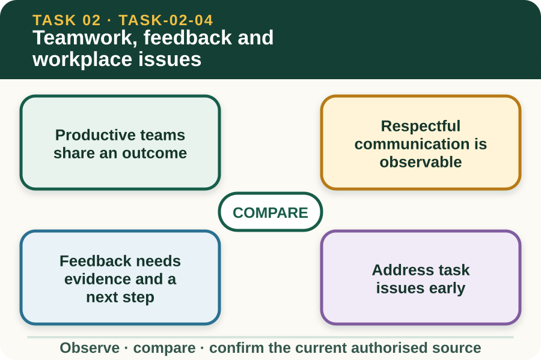
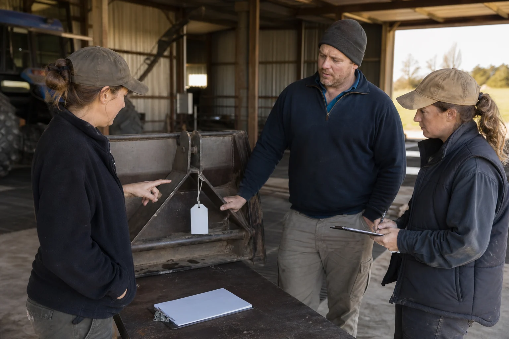

Learning purpose
Use respectful communication, feedback and workplace processes to keep work moving.
Task 2 · Lesson 4 of 4
Use respectful communication, feedback and workplace processes to keep work moving.
Learning purpose
Use respectful communication, feedback and workplace processes to keep work moving.
Success criteria
Learning boundary
Supplementary learning and formative practice only. Current RTO assessment, local procedures and authorised supervision control real work.

A team is more than people working near one another. Members understand the work goal, their responsibilities, the handovers between roles and how progress or problems will be communicated.
Cooperation includes completing agreed work, protecting quality, offering relevant information and asking for assistance before a hidden problem affects others. It does not require taking over work outside one's authority.
Respect is shown by using an appropriate tone, listening without interruption, acknowledging contributions and discussing the work rather than attacking the person. Clear language supports inclusion when team members have different experience, culture or communication needs.
Disagreement can still be professional. An assertive message states the evidence, its effect on the shared task and the decision or support required without becoming passive, aggressive or personal.

Useful feedback is specific to an action or result. It explains what was observed, why it matters and what should be continued, checked or improved.
Receiving feedback involves listening, clarifying the example and deciding how to apply the confirmed advice. A learner does not need to agree with every opinion, but should use the workplace process where the feedback concerns quality, safety or conduct.
A task issue may involve a missed handover, unclear responsibility, delayed resource or different understanding of the plan. Raising it early makes problem-solving easier and reduces the chance that frustration becomes personal conflict.
Start with the shared goal and observable facts. Confirm each person's understanding, identify the gap and agree on a next step within authority, or refer the issue through the workplace process when it cannot be resolved.
Fictional worked example
Observed evidence: In a fictional produce store, Sam expects Jo to enter the final count while Jo believes Sam owns that step, so the record remains blank. Decision and reason: The issue is an unclear handover, not proof that either person is lazy. Safe action: Sam states the shared deadline, shows the blank field and asks to confirm responsibility. Result: The team checks the plan and the supervisor assigns the entry to Jo and the verification to Sam. Next check or record: Both confirm completion through the normal channel and note the clearer handover for next time.
Bullying, harassment, discrimination, repeated unsafe conduct or escalating conflict should not be treated as an ordinary personality difference. Use the current workplace policy and authorised support or reporting pathway.
Do not investigate another person's motives or share the issue widely. Preserve relevant facts, protect privacy and seek assistance from the appropriate workplace role when the matter exceeds routine team problem-solving.
A useful meeting has a purpose, allows people to contribute and ends with clear outcomes. Actions need an owner, timing and a way to confirm completion so that important decisions do not remain as vague memories.
Applying meeting outcomes is part of workplace communication. Read the agreed record, clarify anything uncertain and update personal work rather than relying on an informal version passed between team members.
External media loads only after you choose it.
Source-linked video
Why watch: Notice language and listening behaviours that keep a workplace discussion useful.
Watch for: Which communication behaviour helps the speaker be heard and leads towards a clear next action?
Formative practice
Each option explains the consequence. These answers save only on this device.
Written application
Apply and keep a learning record
In a small group, use fictional roles to identify one handover gap, give evidence-based feedback and record an action, owner, timing and check. Do not use real colleague conduct or personal information.
Learning record: A supplementary-learning huddle record and a short reflection on how the language supported the shared goal.
Lesson responses and the activity are formative learning only. Formal sufficiency and competence remain with the current RTO process.
Next: return to the task hub and follow the teacher-confirmed assessment direction.
Source basis: AHCWRK212 Release 1 teamwork, feedback, conflict, meetings and inclusive-work requirements, together with AHCWRK213 Release 1 meeting and communication requirements. Teacher-posted notes informed concept breadth; current workplace policies control conduct matters.